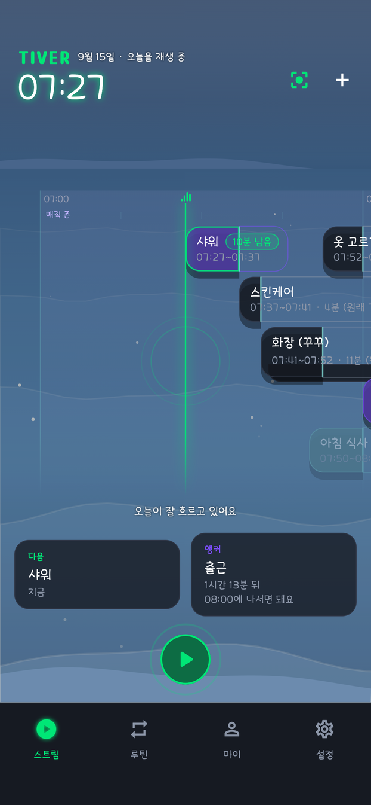
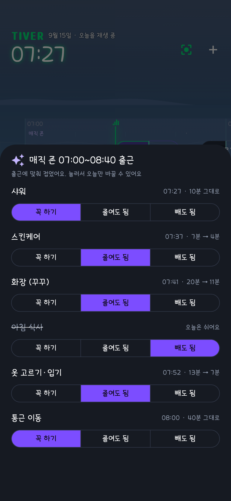
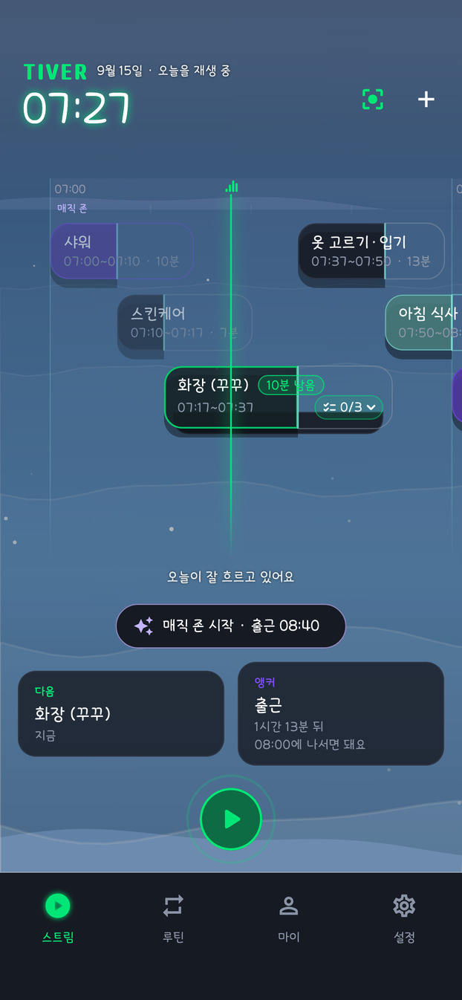
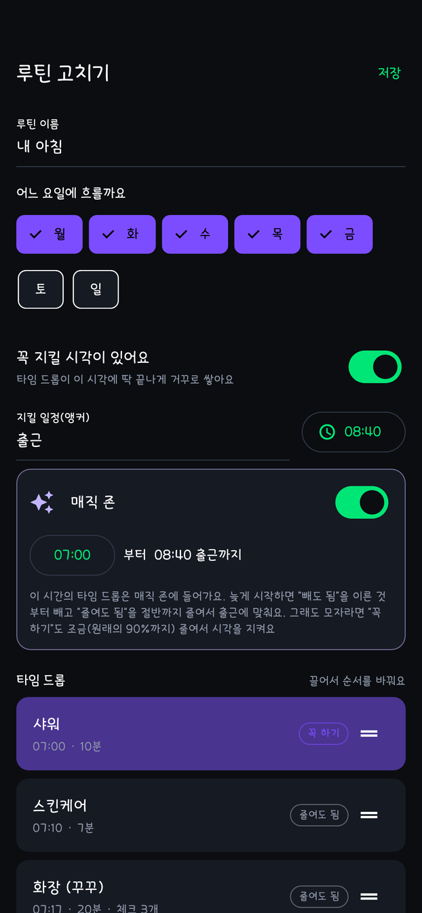

デイリーストリーム
一日が川のように横へ流れます。緑の NOW ラインが今を指すので、残り時間は計算せずに目で見てわかります。
朝には自分なりの順番があります。TIVER はその順番を川にのせて流します。出遅れた日は、外せないものを守って残りを縮めます。
iPhone・無料・広告なし
シャワーを短くするか、朝ごはんを抜くか。迷っている間にまた5分が過ぎます。TIVER は落ち着いているときに決めておいたルールで、その判断を代わりに行います。
アプリの表示は今のところ韓国語のみです。天気と場所検索は韓国のサービスを使うため、韓国の外ではソウルの天気が表示されます。
一日が川のように横へ流れます。緑の NOW ラインが今を指すので、残り時間は計算せずに目で見てわかります。
開始時刻と長さを持つ、ひとつの行動。ひとつ直すと後ろの時刻がひとりでに揃います。
動かせない時刻。出勤、登校、会議など。そこから逆算して、出る時刻を知らせます。
アンカーまでの区間。タイムドロップごとに「必ずやる・短くしてよい・抜いてよい」を決めておくと、遅い朝にワンタップでたたみます。




連続記録も、たまったリストも、赤い印もありません。時間が過ぎたものは静かに流れていきます。時間帯と天気で変わる川、流しておける水の音、点数のつかない水切りもあります。